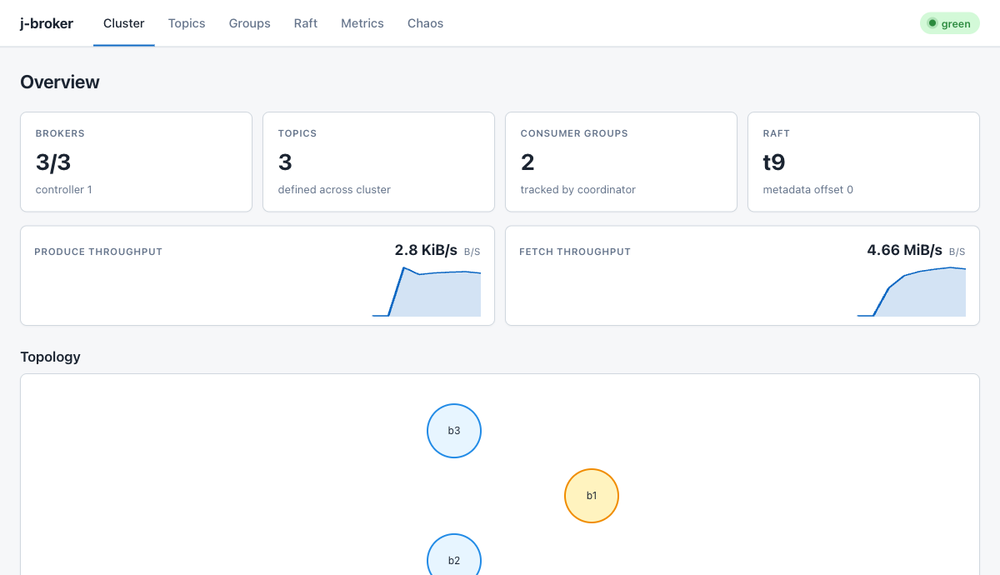

Install & deploy
Four ways to run j-broker: Docker Compose for a local 3-broker cluster, Helm for Kubernetes, the published release artifacts, or a from-source build. This page covers all four, then the full broker configuration reference.
Prerequisites
- Docker Compose path — Docker with the compose plugin.
- Kubernetes path — Helm 3 and a cluster (Kind or minikube work for local use).
- From source — Java 21 (Temurin). The Gradle wrapper is pinned to 8.7 and SHA-256 verified on download; no Gradle install needed.
- The full demo additionally uses
curlandpython3to talk to the admin REST API.
Install with Docker Compose
From a repository checkout:
docker compose upThis builds both images and starts three brokers plus the admin UI. The admin container waits for each broker's gRPC port to accept connections before starting, so the whole stack settles on its own.
| Component | Host port | Notes |
|---|---|---|
| Admin UI | 15672 | RabbitMQ-management port convention. |
| Broker 1 (gRPC) | localhost:9092 | Container port 9092. |
| Broker 2 (gRPC) | localhost:9093 | Container port 9092. |
| Broker 3 (gRPC) | localhost:9094 | Container port 9092. |
| Chaos HTTP (opt-in) | 9100 / 9101 / 9102 | Bound only with JBROKER_CHAOS_ENABLED=true JBROKER_CHAOS_PORT=9100 JBROKER_CHAOS_TOKEN=<secret>. |
| Raft peer RPC | — | Port 9192 stays inside the compose bridge network; it is never exposed to the host. |
Each broker advertises localhost:909{2,3,4} to external clients via --advertised-listeners, so host-side producers and consumers can follow leader hints across the bridge network.

The admin UI overview after startup: topology, controller badge, per-broker roles.
Volumes and teardown
Broker data persists in named volumes broker1-data, broker2-data, broker3-data, mounted at /var/lib/jbroker in each container (Raft state plus partition segment files).
docker compose down # stop; data volumes survive for the next up
docker compose down -v # stop and wipe all broker dataMonitoring profile
docker compose -f docker-compose.yml -f docker-compose.monitoring.yml --profile monitoring upAdds Prometheus at http://localhost:9091 and Grafana at http://localhost:3000 with two auto-provisioned dashboards (cluster overview, partitions). Prometheus scrapes the admin app's merged /actuator/prometheus endpoint — the admin app is the single scrape point; brokers have no metrics port of their own.
Install with Helm
The chart ships a 3-replica broker StatefulSet (stable network identity for the Raft voter config), a single-replica admin Deployment, an optional bundled Redis, and opt-in mTLS wiring. Chart source and full docs: deploy/helm/j-broker.
From the published chart
Release-artifact path — pulls the chart and images published by the v2.0.0-rc.1 release:
helm install jb oci://ghcr.io/jeremainecheong/charts/j-broker --version 2.0.0-rc.1 \
--set broker.image.repository=ghcr.io/jeremainecheong/jbroker-broker \
--set broker.image.tag=2.0.0-rc.1 \
--set admin.image.repository=ghcr.io/jeremainecheong/jbroker-admin \
--set admin.image.tag=2.0.0-rc.1
kubectl port-forward svc/jb-j-broker-admin 15672:15672jbroker-broker:1.4.0), matching the from-source flow below — release installs must override repository and tag as shown.From source (Kind / minikube)
# Build + load the images into your local cluster:
docker build -f Dockerfile.broker -t jbroker-broker:1.4.0 .
docker build -f Dockerfile.admin -t jbroker-admin:1.4.0 .
kind load docker-image jbroker-broker:1.4.0 jbroker-admin:1.4.0
# Install with defaults (3-broker plaintext cluster, no TLS, no Redis):
helm install jb deploy/helm/j-broker
kubectl port-forward svc/jb-j-broker-admin 15672:15672Against a live release, helm test jb runs a hook pod that TCP-connects to every broker pod and the admin service and fails if any port does not answer. deploy/helm/j-broker/tests/render-smoke.sh checks the rendered templates without any cluster.
Values highlights
values.yaml is the authoritative, fully commented list. The ones that shape a deployment:
| Key | Default | Purpose |
|---|---|---|
broker.replicaCount | 3 | Raft-majority-friendly odd number. Changing it on a running release requires manual Raft voter reconfiguration. |
broker.persistence.size | 10Gi | Per-broker PVC size, backing /var/lib/jbroker. |
broker.podDisruptionBudget.enabled | true | Caps voluntary evictions at maxUnavailable: 1 so node drains never cost Raft its majority. |
broker.podAntiAffinity.enabled | true | Soft anti-affinity spreading brokers across nodes; single-node clusters still schedule. |
broker.rack.enabled | false | Rack awareness — see below. |
broker.advertisedHostTemplate | "" | sprintf-style template (%d → 1-indexed broker id) building --advertised-listeners for external clients, e.g. broker%d.example.com. Empty skips the flag. |
broker.auth.mode | none | none or mtls. mTLS derives the principal from the client certificate CN and enforces default-deny ACLs. Requires tls.enabled. |
broker.auth.superUsers | broker,admin | Principals that bypass ACL checks; the inter-broker and admin-app certificate CNs must be here before flipping to mtls. |
admin.replicaCount | 1 | More than one replica requires redis.enabled=true for cross-replica SSE fan-out. |
admin.ingress.enabled | false | Stand up an Ingress for the admin UI. |
admin.auth.existingSecret | "" | Secret whose users key holds name:bcrypt-hash pairs for operator login. Empty leaves the admin app open (it logs a startup warning). |
tls.enabled | false | mTLS on every gRPC hop. |
tls.secretName | jbroker-tls | Secret carrying ca.crt + tls.crt + tls.key PEM files. |
redis.enabled | false | Bundled Redis for quota buckets + SSE fan-out. The default install never dials Redis. |
networkPolicy.enabled | false | Ingress lockdown — see below. |
metrics.serviceMonitor.enabled | false | prometheus-operator ServiceMonitor — see below. |
metrics.prometheusRule.enabled | false | Alert pack — see below. |
Enabling mTLS
scripts/tls/bootstrap-ca.sh .tls
kubectl create secret generic jbroker-tls \
--from-file=tls.crt=.tls/broker1.crt \
--from-file=tls.key=.tls/broker1.key \
--from-file=ca.crt=.tls/ca.crt
helm upgrade --install jb deploy/helm/j-broker \
--set tls.enabled=true \
--set tls.secretName=jbroker-tlsWith tls.enabled, every broker server and every inter-broker client speaks mTLS, and the admin app uses the same bundle to dial brokers (tls.adminClientSecretName optionally points it at a separate client cert). To also turn on authentication and ACL enforcement, set broker.auth.mode=mtls — and make sure the inter-broker and admin certificate CNs are in broker.auth.superUsers first, or the brokers will deny each other. The full principal/ACL model is on the Security page.
broker1.crt…), but the chart mounts one Secret on every broker pod. In a production deployment, issue one cert per StatefulSet pod — SAN-matching each pod's stable DNS name — with cert-manager or similar.Rack awareness
broker.rack.enabled=true makes each pod read its rack from its own topology.kubernetes.io/zone pod label via the downward API (surfaced to the broker as JBROKER_RACK); topic placement then spreads each partition's replicas across the racks brokers report, so a whole-zone outage cannot take out every copy. The downward API cannot read node labels, so the pods themselves must carry the label — mirror it from the node with an admission webhook or stamp it through zone-pinned deployment tooling. A pod missing the label fails to start with CreateContainerConfigError. Leave this off on single-zone clusters.
NetworkPolicy
networkPolicy.enabled=true locks down ingress: the Raft port stays broker-only, chaos and Redis ports admin-only, the broker client port is scoped by the networkPolicy.clientFrom peer list and the admin UI/API port by networkPolicy.adminFrom (an empty list keeps that port open to any peer). Egress is left unrestricted. Enforcement needs a CNI that implements NetworkPolicy (Calico, Cilium, …) — Kind's stock kindnet accepts the objects but enforces nothing.
ServiceMonitor and alerts
metrics.serviceMonitor.enabled=true renders a prometheus-operator ServiceMonitor scraping the admin /actuator/prometheus endpoint (the merged per-broker view; the actuator path stays open even with admin auth enabled). Keep the scrape interval at or above the admin app's own 5 s broker-scrape cadence. When NetworkPolicy is on with a non-empty adminFrom, add the Prometheus pods to it or scrapes will be dropped.
metrics.prometheusRule.enabled=true ships seven alert rules: under-replicated partitions, sustained follower lag, stuck high watermark, metadata-Raft term flapping, unreachable broker, low disk headroom, and (with the ServiceMonitor) scrape-down. Two thresholds are tunable under metrics.prometheusRule.thresholds: replicationLagRecords (default 1000) and raftTermIncreasesPer10m (default 3). The expressions assume the operator-attached namespace label, so enable the rule pack together with the ServiceMonitor. Both objects need the monitoring.coreos.com CRDs.
Published artifacts
All commands in this section are release-artifact-dependent — they pull what the tag-triggered release pipeline published for v2.0.0-rc.1.
Container images
ghcr.io/jeremainecheong/jbroker-broker and ghcr.io/jeremainecheong/jbroker-admin, tagged with the release version. Both run as non-root (uid 1001) and are linux/amd64.
:latest tracks stable releases only. A prerelease such as 2.0.0-rc.1 never moves it — pin the explicit version tag.A single-broker instance (the image's default command runs server --data-dir /var/lib/jbroker with itself as the only voter):
docker run -p 9092:9092 -v jbroker-data:/var/lib/jbroker \
ghcr.io/jeremainecheong/jbroker-broker:2.0.0-rc.1Named volumes inherit the image's ownership; a host bind-mount onto /var/lib/jbroker must be writable by uid 1001.
Helm chart
helm install jb oci://ghcr.io/jeremainecheong/charts/j-broker --version 2.0.0-rc.1Remember the image overrides from the Helm section above. Each GitHub Release also carries the packaged chart .tgz as an attachment.
Client jars (GitHub Packages)
Five modules publish under io.github.jeremainecheong: proto, raft-core, raft-transport, broker-storage, broker-core. The client classes — ClusterClient, BatchingProducer, TransactionalProducer, Consumer — live in broker-core, which pulls the others transitively.
read:packages scope — an anonymous repositories block will fail with 401. This is a GitHub constraint, not a choice this project made.// build.gradle
repositories {
mavenCentral()
maven {
url = uri("https://maven.pkg.github.com/jeremainecheong/j-broker")
credentials {
username = findProperty("gpr.user") ?: System.getenv("GITHUB_ACTOR")
password = findProperty("gpr.token") ?: System.getenv("GITHUB_TOKEN")
}
}
}
dependencies {
implementation "io.github.jeremainecheong:broker-core:2.0.0-rc.1"
}Building from source
git clone https://github.com/jeremainecheong/j-broker.git
cd j-broker
./gradlew :broker-app:installDist # broker + CLI
./gradlew build # full build with unit + fast integration testsinstallDist produces the shipping binary at broker-app/build/install/broker-app/bin/broker-app — the same launcher the Docker image packages. It is both the broker entrypoint (broker-app server …) and the CLI (topics, produce, consume, console-consumer, admin); alias it to j-broker for your shell. Full CLI reference: broker-app/README.md. The admin app runs with ./gradlew :admin-app:bootRun (port 9090 bare, 15672 in the container), and the two Dockerfiles (Dockerfile.broker, Dockerfile.admin) build the images used by compose and the chart.
Configuration reference
Server settings resolve in layers, later layers winning: built-in defaults ← --config j-broker.yaml ← JBROKER_* environment variables ← command-line flags. The YAML file is a flat map of dotted keys; unknown keys in the file are startup errors (they are almost always typos), unrecognized JBROKER_* variables only warn.
broker-app server --validate-configprints every resolved key with its value and source, reports all validation problems at once, and exits 0/2 without binding a port.
The table below mirrors the key table that drives validation (ServerConfig.KEYS), so the code is the ground truth for every row.
| Key | Default | Env | Flag | Description |
|---|---|---|---|---|
node.id | 1 | JBROKER_NODE_ID | --id | Broker id. Must appear in the voter list. |
data.dir | ./var/broker | JBROKER_DATA_DIR | --data-dir | Data directory (Raft log + partition logs). |
broker.port | 9092 | JBROKER_BROKER_PORT | --broker-port | Client and inter-broker gRPC port. |
raft.port | 9192 | JBROKER_RAFT_PORT | --raft-port | Raft peer RPC port. |
voters | (empty) | JBROKER_VOTERS | --voters | Cluster voter list, ID@HOST:RAFT:BROKER,.... Empty runs a single-broker cluster with self as the only voter. |
advertised.listeners | (empty) | JBROKER_ADVERTISED_LISTENERS | --advertised-listeners | Client-facing address overlay, ID=HOST:PORT,.... Ids absent from the overlay advertise their bind address. |
rack | (empty) | JBROKER_RACK | --rack | Rack / availability-zone label for this broker (e.g. the topology.kubernetes.io/zone value). When brokers span two or more racks, topic placement spreads replicas across them. Empty = no rack. |
chaos.port | -1 | JBROKER_CHAOS_PORT | --chaos-port | Cooperative chaos HTTP port. -1 disables. |
chaos.enabled | false | JBROKER_CHAOS_ENABLED | --enable-chaos | Explicit opt-in for the chaos control plane. chaos.port refuses to bind without it. |
chaos.token | (empty) | JBROKER_CHAOS_TOKEN | — | Bearer token every chaos HTTP request must present. Required when the chaos port is enabled. |
consumer.offsets.partitions | 50 | JBROKER_CONSUMER_OFFSETS_PARTITIONS | --consumer-offsets-partitions | Partition count for the internal __consumer_offsets topic. Fixed at first boot. |
min.insync.replicas | 2 | JBROKER_MIN_INSYNC_REPLICAS | --min-insync-replicas | Cluster default acks=all durability floor. Per-topic config overrides; RF-1 topics clamp down. |
max.message.bytes | 1048576 | JBROKER_MAX_MESSAGE_BYTES | — | Cluster default for the largest serialized produce batch. Per-topic config overrides; hard cap 8 MiB (gRPC frame limits bound every hop). |
log.segment.bytes | 134217728 | JBROKER_LOG_SEGMENT_BYTES | — | Cluster default segment roll threshold. Per-topic segment.bytes overrides. |
log.retention.ms | 604800000 | JBROKER_LOG_RETENTION_MS | — | Cluster default time retention (7 days). -1 = unlimited. Per-topic retention.ms overrides. |
log.retention.bytes | -1 | JBROKER_LOG_RETENTION_BYTES | — | Cluster default size-retention budget per partition. -1 = unlimited. Per-topic retention.bytes overrides. |
log.flush.messages | -1 | JBROKER_LOG_FLUSH_MESSAGES | — | Cluster default flush count trigger. -1 = off (fsync on segment roll + replication). Per-topic flush.messages overrides. |
log.flush.ms | -1 | JBROKER_LOG_FLUSH_MS | — | Cluster default flush age trigger, ms. -1 = off. Per-topic flush.ms overrides. |
log.cleaner.interval.ms | 300000 | JBROKER_LOG_CLEANER_INTERVAL_MS | — | Retention/compaction cleaner tick interval, ms. |
offsets.retention.ms | 604800000 | JBROKER_OFFSETS_RETENTION_MS | — | Committed offsets of groups with no live members expire once their newest commit is older than this (7 days). -1 disables expiry. |
shutdown.timeout.ms | 30000 | JBROKER_SHUTDOWN_TIMEOUT_MS | — | SIGTERM drain budget: how long the broker spends handing led partitions to other ISR members before closing. 0 skips the drain. |
storage.headroom.bytes | 1073741824 | JBROKER_STORAGE_HEADROOM_BYTES | — | Disk-headroom watermark. Below it, client produces get retriable STORAGE_FULL while fetch/replication/admin keep serving. |
auth.mode | none | JBROKER_AUTH_MODE | --auth-mode | Client authentication: none or mtls. mtls derives the principal from the client certificate CN, rejects principal-less RPCs, and requires tls.enabled. |
super.users | (empty) | JBROKER_SUPER_USERS | — | Comma-separated principals that bypass ACL checks. Put inter-broker certificate CNs here before turning on auth.mode=mtls. |
tls.enabled | false | JBROKER_TLS_ENABLED | --tls-enabled | Enable mTLS on every gRPC listener and inter-broker client. The flag is a switch (no value). |
tls.cert | (empty) | JBROKER_TLS_CERT | --tls-cert | PEM certificate chain. Required when tls.enabled. |
tls.key | (empty) | JBROKER_TLS_KEY | --tls-key | PEM private key. Required when tls.enabled. |
tls.trust | (empty) | JBROKER_TLS_TRUST | --tls-trust | PEM trust bundle peers are verified against. Required when tls.enabled. |
Per-topic keys (min.insync.replicas, max.message.bytes, retention.ms, retention.bytes, segment.bytes, flush.messages, flush.ms) are set at topic create/update through the admin API and override the cluster default for that topic.